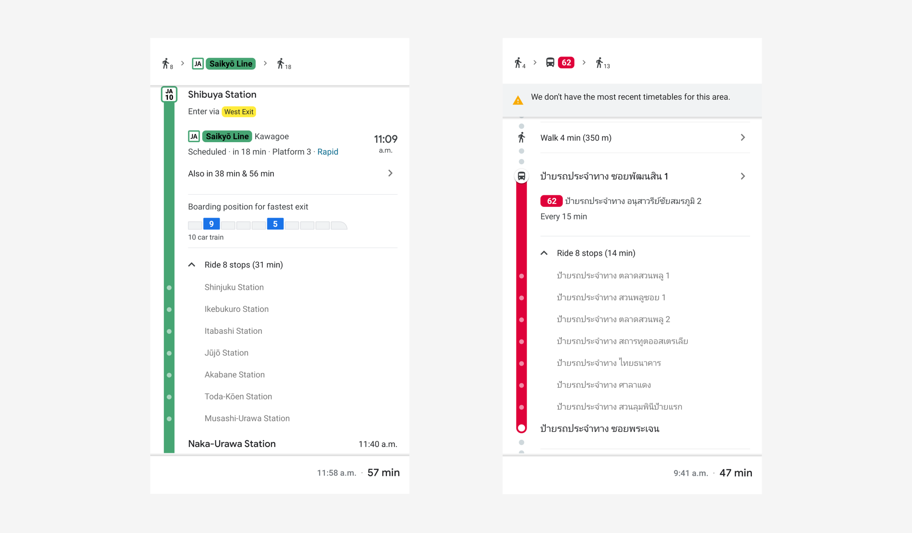
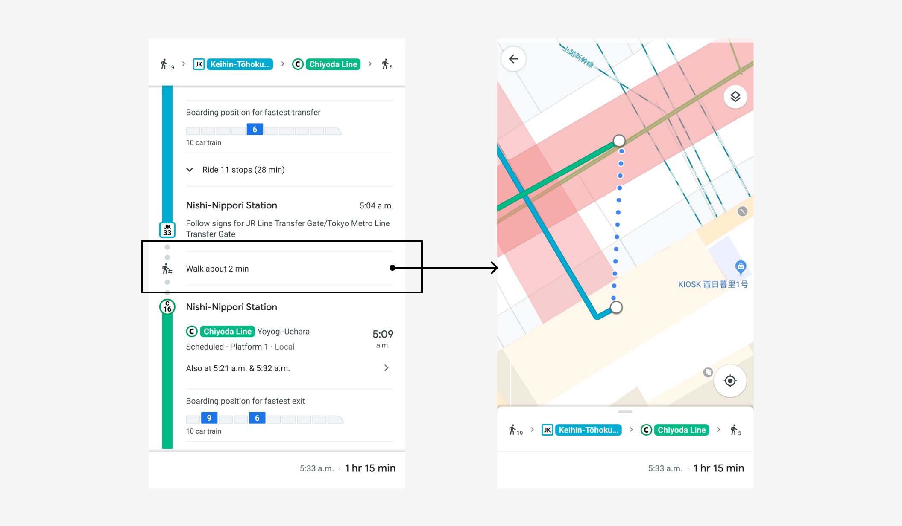
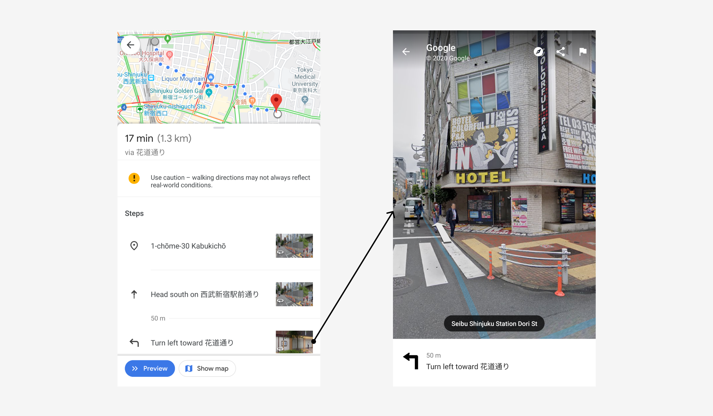
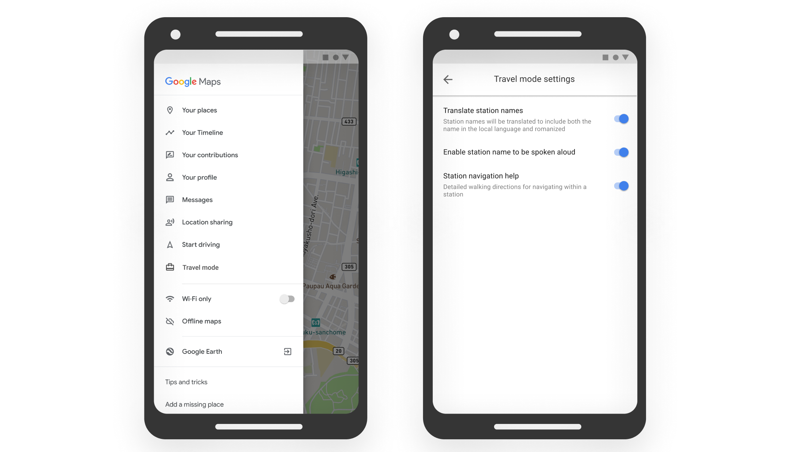

Role: UX Designer
Timeline: December 2019 - present (work in progress)
Team: 2 UX Designers: myself and my friend/mentor,
Grace Ma
I studied abroad in Singapore for a semester in 2019. While my classes kept me in Singapore during the weekdays, most of my weekends were spent travelling with other exchange students. In one semester, I ended up going to Japan, Korea, Thailand, New Zealand, Hong Kong, and Taiwan.
While we had a blast, we also struggled a lot with getting around. Since we’re all students, we were travelling on a budget. We generally avoided taking taxis and Ubers/Grabs because public transportation was a lot cheaper. Needless to say, we got lost a couple of times. So I thought to myself: how might we make navigating a foreign country easier for travellers on a budget?
As this was a passion project, I wanted to use this opportunity to grow and develop my skills in various areas of design. I wanted to:
Travellers have a hard time understanding how to get around in a foreign country
Budget travellers, students, backpackers
We looked at what currently exists to help travellers navigate a foreign country:
We came up with some questions to learn about the users' current experience with navigating a new environment. To begin, we built a holistic picture of a user's journey, from deciding on a destination, to their arrival, and then their day to day transportation experience. The questions aimed to find out about their research process (if any), how their experiences varied with location, as well as what their obstacles and how they overcame them. We wanted to get complete stories out of each user's experience.
I interviewed 5 users while I was abroad, these consisted of other exchange students who were also travelling on a budget. There is also additional information I gathered from casual conversations with my travel buddies. Grace and I also briefly surveyed and interviewed a handful of users back in Canada who have travelled as well. The participation criteria was:
Travel and Research Tools
Pain Points
Other Considerations
Here’s what a user’s typical journey looks like:
As users were figuring out things as they went on the go, we started with a solution that was mobile friendly. We were debating between a stand-alone app or web app but decided to design an integration with Google Maps instead considering that 100% of the users said that they rely heavily on it. A few users also mentioned that they found it annoying to have to download apps and then uninstall it afterwards when they have no more purpose. The pain point that we wanted to focus on was the language barrier as it was the source of the majority of the users’ struggles.
Users found that Google Maps would often romanize station and stop names but the names written on signs in reality are often in the local language. This leads to a disconnect that causes users to be confused and struggle with identifying where they are and where they need to go. On the flip side, there are certain regions where station and stop names are shown in Google Maps only in the local language. Users noted that while they are able to match what is shown in the app to signs in reality, it’s difficult if they are completely unfamiliar with the language and with the short amount of time that they have stopped/passing through a station/stop.
Left: Romanized station names in Japan. Right: Station names written in Thai only in Thailand
We decided to add both the romanized name as well as the name in the local language. That way, users have two references to help them orient themselves. Users noted that with just the romanized name itself, they would get confused by other stations with similar sounding names. By having the local name, users can “picture” match it with the signs to ensure that they are where they need to be.
We were informed that most transportation systems will audioally announce the upcoming stop/station. This, along with the pre-existing romanized names on Google Maps, users could get a sense of where they were. However, users are unable to discern tones or proper pronunciation if they are unfamiliar with the language which can be confusing if there are other stations of similar sounding names.
The feature we added was an audio feature, similar to the one in Google Translate. Users are able to play the name of the station (spoken in the local language) so that they can verify with the announcements.
Currently, Google Maps displays the transition between modes of transportation (bus to subway/MRT and vice versa) but it only displays the distance and walk time. When the user taps into its details, it zooms into the map showing the path. However, many stations are above or below ground with few entrances. Additionally, some stations can get rather complicated, whether it be that it’s a transfer point and has multiple platforms, hidden away, or in a really busy area (ex. In a mall). 80% of users said that they struggled to navigate the stations.
Left: Description of transfer point. Right: What is shown when user taps on “Walk about 2 min”
Google Maps provides a great amount of detail for buses and subways/MRT, but not for the steps in between. The app also provides good directions for getting around by foot. We wanted to bridge the steps between modes of transportation to make the entire journey for the user seamless and smooth. We created a “walking tour” of the station in the same style as Google Maps’ walking directions.
Left: Steps detailing walking directions. Right: Photos to help orient the user.
Pictures are included to help visually guide the user through the station with directions indicating not just the flat plane but also the vertical plane (ex. How many floors up or down to go). It is designed in the same style as the walking directions in Google Maps since users are already familiar with it.
We chose to integrate our product with Google Maps to decrease the effort that users would have to go through to use it. Most people have Google Maps as it is installed on every Android device and even iOS users tend to have a strong preference for Google Maps over Apple Maps. Surveyed users noted that they still use Google Maps even when they’re in a city that they’re familiar with (not just when they’re travelling) to check bus times, traffic, estimated time of arrival, or when going somewhere new. Google Maps is essential for both travellers and locals.
To keep the versatility of Google Maps, we designed it so that our product is a travel mode that can be easily toggled on or off to accommodate the varying needs of users. This saves the users the hassle of downloading and uninstalling an app before and after their trip. All users surveyed said that they really like the features offered by Google Maps and are generally happy with it even though it’s not perfect. Having Travel Mode integrated with Google Maps in its settings means that it builds upon its strengths while filling in the gaps that appear during travels.
Left: Google Maps’ menu with a section for Travel Mode. Right: Customizable travel mode settings.
Keeping all the functionalities that users currently love while adding the additional features without the interface getting too cluttered. There is a lot of information being presented and it’s difficult to display it all in a neat way.